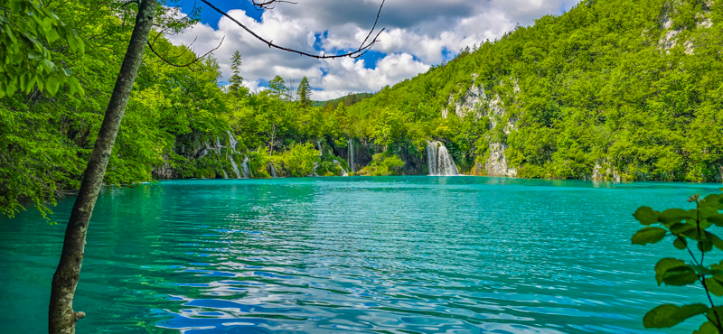
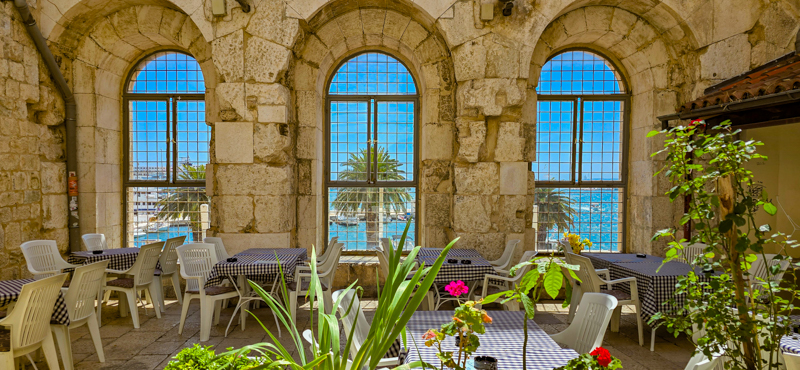
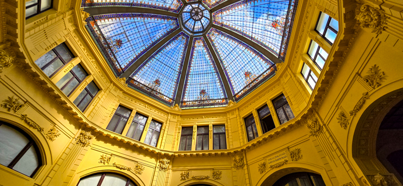

Plitvice Lakes: Nature's Masterpiece
As I stood on the wooden walkway, surrounded by the sounds of the cascading water, I couldn't help but feel I had stepped into a living painting. Plitvice Lakes National Park is a testament to nature's artistry, with its 16 interconnected lakes creating a mesmerizing display of color and motion...

Split: Where History Breathes
Walking through the narrow alleys of Diocletian's Palace in Split is like stepping into a living history book. The ancient Roman walls, now weathered and adorned with vibrant Mediterranean flora, stand in stark contrast to the bustling cafes and boutiques that have made their home within. As I ran my hand along the cool stone, I could almost hear the whispers of emperors and commoners alike...

Zagreb: A Tale of Two Cities
Zagreb, Croatia's capital, is a city of contrasts. The Upper Town, with its cobblestone streets and medieval architecture, tells the story of a bygone era. St. Mark's Church, with its colorful tiled roof depicting the coat of arms of Zagreb, stands as a symbol of the city's rich history. This duality is what makes Zagreb such a fascinating destination, offering visitors a journey through time within a single day....
Read More